DealerOps is a multi-tenant back office for independent used-car dealers. It combines a dealer management system for vehicle inventory, a customer and lead system, an OMVIC-style advertising compliance gate reviewed by a real AI model, a finance-grade audit trail, and a public buyer site. The product is built as four cooperating applications — a React 19 client, a YARP gateway, an ASP.NET Core 10 business service, and an internal ASP.NET Core 10 AI service — over MySQL 8.4.
This report analyses the test execution data produced in Group Assignment 3 (October 13, 2026) against the plan approved in Group Assignment 2, adds a current-version regression executed on the active stack on November 23, 2026, and recommends a deployment strategy for the capstone release.
The headline results are as follows.
| Area | Result | Interpretation |
|---|---|---|
| Functional execution (Assignment 3 baseline) | 87 planned, 76 executed (87.4%), 76 passed, 0 failed, 11 not run | Every executed functional assertion passed. The 11 unexecuted cases are the stakeholder acceptance set, which was never scheduled. |
| Supplementary functional evidence | Integration retest 44/44 passed; live AI provider follow-up passed | The one high-severity blocker from the execution window was closed by retest rather than left open. |
| Current-version regression (Nov 23, 2026) | 457 of 459 executed cases passed; 1 failure was a genuine product defect (DEF-004) and 1 was a test-isolation flake | The active .NET 10 / React stack, which replaced the baseline the October evidence was gathered on, still meets the planned behaviour. |
| Non-functional (performance) | 20/20 requests HTTP 200; mean 12.6 ms; maximum 71.8 ms against a 3 000 ms threshold | Response time is two orders of magnitude inside the planned limit on the tested path. This is a smoke measurement, not a capacity test. |
| Non-functional (security boundary) | Internal-token guard, CORS, direct-service access and route-exposure checks all behaved as specified | The gateway-only boundary that the whole security design rests on holds. |
| Defects | 4 logged in the Assignment 3 execution window (1 high, 3 medium): 3 closed, 1 accepted scope limitation. 2 further defects found by the current-version regression: DEF-003 in the automated suite (closed) and DEF-004 in the product (open). | Five of the six originated in the environment, the toolchain, the automated suite, or a deliberate scope exclusion. DEF-004 is the one genuine product defect this report records. |
The most significant finding of the analysis is the defect distribution. One hundred percent of the logged defects were environmental, configuration or test-automation defects — a Docker API version mismatch, an unsupported host JDK, a deliberately absent AI provider key, and an unfunded acceptance environment — and zero were application assertion failures. The product code was not the weak point of this project; the test environment was.
Release recommendation: the software is Ready with warnings. The functional and security evidence supports deployment of the capstone demonstration release. Four conditions remain open and are stated plainly in §7: one product defect (DEF-004) in the repeat buyer-enquiry path is unfixed, no formal stakeholder acceptance session has been held, no load or capacity test has been run, and code coverage has never been measured with instrumentation.
This report documents and interprets the testing activities carried out across the DealerOps software development life cycle, from requirements and design review through unit, integration, system and non-functional testing, and it converts those results into a deployment decision. It follows the life-cycle view of testing described by Everett and McLeod (2007), in which testing is planned and measured in every phase rather than performed only before release, and it uses the documentation structure of ISO/IEC/IEEE 29119-3 for the test log, the incident records and the completion report.
The report has three jobs. First, it analyses the functional test outcomes recorded in Group Assignment 3 and states which requirements were validated and which were not. Second, it analyses the non-functional (structural) characteristics of the system — response time, security boundary, reliability, installability and platform configuration — and interprets them against the thresholds fixed in the Assignment 2 test plan. Third, it performs a root cause analysis of the defects found, recommends a deployment strategy with a rollback path, outlines the training material end users will need, and records the lessons the group takes out of the project.
A note on evidence integrity. Nothing in this report claims more than the recorded evidence supports. The original Assignment 3 execution denominator of 87 planned and 76 executed cases is left unchanged; later verification runs are reported separately as supplementary evidence rather than folded in to improve the percentages. Work that was never done — the stakeholder acceptance session, load testing, instrumented coverage measurement — is stated as not done rather than omitted.
The system under test is the DealerOps baseline held in the project repository. The report covers the following.
| Dimension | In this report |
|---|---|
| Modules | DealerOps.Core (authentication, membership and roles, tenancy, inventory, customers, leads, work orders, photos, listings, the OMVIC rule engine, payments, reports, audit, persistence); DealerOps.Gateway (the single public entry point, JWT validation, CORS, routing, internal-token injection); DealerOps.AiService (advertisement review and the read-only assistant, no database); the React 19 web client; MySQL 8.4. |
| Features | Dealership isolation; sign-in and role separation; the advertising compliance gate and its five check states; AI review fail-safe behaviour; the inventory lifecycle and the sold lock; the gateway and internal service boundary; the audit trail; customers, vehicle links and leads; payments, bill of sale and reports; the public buyer site; deployment and release. |
| Test levels | Requirements and design review, unit, integration and API, system (browser end-to-end), non-functional smoke, and the acceptance level — the last of which is reported as not executed. |
| Environments | Assignment 3 baseline: an isolated Docker bridge network (dealerops-ga3-net) on a Mac mini host with Docker Desktop 29.5.3, MySQL 8.4 and Java 21 containers. Current-version regression: the project's private end-to-end stack (isolated ports and an isolated dealer_core_e2e database) built from the working tree, so the shared development stack is never written to. Azure App Service with Azure Database for MySQL Flexible Server is the target release environment. |
| Out of scope | Production-scale load, soak and disaster-recovery testing; the internal correctness and availability of third-party providers; legal or OMVIC approval of an advertisement; real marketplace publishing and real card payment processing; the retired Java and Vue implementations; native mobile applications; live production customer data. |
Baseline change during the course. The Assignment 3 execution of October 13, 2026 ran against the Java 21 implementation of the backend services. The platform has since completed its planned migration to the active .NET 10 and React stack described in the Assignment 2 plan v2.0, and the Java and Vue implementations are retired. Because an analysis of retired-stack evidence alone would not support a deployment decision for the product that actually ships, §4.4 reports a current-version regression executed on the active stack on November 23, 2026. Both data sets are kept distinct.
The following sources informed the testing programme and this analysis. Full APA entries are in §9.
Structural, or non-functional, testing evaluates the quality attributes of the system — performance, security, reliability, installability, scalability and platform configuration — rather than whether a feature produces the right answer. Everett and McLeod (2007, Chapter 12) describe non-functional testing as a buffet: a project selects only the attributes that its architecture and its business risk actually require, and tests those properly, instead of attempting every category thinly. DealerOps applied that principle. The attributes selected were the ones on which the product's own design arguments depend: if the gateway boundary leaks, every other control is pointless; if a response takes longer than a user will wait, the inventory workflow is unusable; if the installation is not reproducible, the release cannot be demonstrated or rolled back.
| Test type | Applicability | Description of test, and why it mattered here |
|---|---|---|
| Performance | Yes | Repeated black-box response-time sampling of the gateway health path from a disposable client container inside the isolated network, n = 20, cold first request plus warm steady state. The Assignment 2 plan fixes a 3-second limit for a normal gateway request; this measures the public request path without a dependency on an external provider. |
| Security | Yes | Internal-token guard on the AI service, direct access to core and the AI service from outside the gateway, unknown public route exposure, CORS with an unconfigured origin, authentication rejection on a malformed login, and cross-dealership access refusal. This is the highest-risk attribute in the product: the design states that the browser may reach only the gateway. |
| Reliability | Partial | Error rate over the performance sample (0 failures in 20 requests) and stability of the four containers across the execution window. No endurance or soak run was performed, so mean time between failures is not claimed. |
| Installability | Yes | Build of the service artefacts from the working tree, container start-up in dependency order, database creation, and automatic schema migration (13 migrations applied at first start). This attribute directly supports the deployment plan in §5. |
| Config / platform | Yes | Execution on the supported toolchain versus an unsupported one, and Docker client-to-engine API compatibility. Both produced findings (DEF-002, DEF-001). |
| Usability | Partial | Browser smoke of the signed-in workflows — sign-in, inventory list, customer and lead views, the assistant panel, and the release footer. Observational only; no accessibility audit and no structured usability study was conducted. |
| Scalability | No | No horizontal or vertical scaling behaviour was measured. The test environments are one workstation and a single small Azure plan, so a scaling result would not represent the deployment target. Recorded in §2.6 as a residual risk. |
| Maintainability | No | No maintainability metric (change-failure rate, patch effort) was gathered. The project is a single-release capstone and has no maintenance window to measure. |
Table 2.1 — Non-functional attribute selection. 'Partial' means evidence was collected but is not sufficient to state a measured result.
| Area | Assignment 3 baseline (October 13, 2026) | Current-version regression (November 23, 2026) |
|---|---|---|
| Hardware | Mac mini host; Docker Desktop 29.5.3 | Same host, services run directly on the host |
| Runtime | Java 21.0.11 / 21.0.12.1 in build and runtime containers | .NET 10 for core and gateway; Node for the Vite client |
| Network | Isolated Docker bridge network dealerops-ga3-net; gateway 8080, core 8081, AI 8082 inside the network; the public boundary exercised through the gateway service name only | Private end-to-end stack on isolated ports (web 5175, gateway 18080, core 18081); the shared development stack on 8080 / 8081 / 5174 is never started or written to |
| Database | MySQL 8.4 container; 13 migrations applied at first start | MySQL 8.4; isolated database dealer_core_e2e, dropped and recreated for the run |
| Test tools | Maven Surefire and Failsafe, Testcontainers, curl in a disposable container, Chrome for the browser smoke | Playwright (Chromium), against the gateway and the browser client |
| Dependencies | MySQL 8.4; the AI provider endpoint, reached only in the supplementary follow-up | MySQL 8.4; the AI service shared from the development stack |
| Test data | Fresh database with a seeded synthetic platform administrator; no production personal data and no real provider key in the formal run | Seeded synthetic fixtures created by the suite; no production personal data |
The companion defect-tracking workbook holds the row-level log. The chronological events below are the ones that carry an analytical conclusion.
| Date / time (MDT) | Tester | Build / version | Environment notes | Preconditions and postconditions |
|---|---|---|---|---|
| 2026-10-13 15:54 | Yuandong Yang | Working tree, Java 21 | Host toolchain | Pre: project builds. Post: unit suites green for core (20), gateway (10) and AI (19). |
| 2026-10-13 15:55 | Yuandong Yang | Working tree, Java 25 | Unsupported host JDK, run for diagnosis | Pre: same source. Post: Mockito/Byte Buddy instrumentation and Lombok compilation failed; logged as DEF-002. |
| 2026-10-13 15:56 | Yuandong Yang | Containers built from the working tree | dealerops-ga3-net created; four containers started | Pre: fresh database. Post: all containers running; 13 migrations applied. |
| 2026-10-13 15:57 | Yuandong Yang | Same build | Smoke through the gateway only | Pre: services healthy. Post: health, release, login, route and CORS checks observed as specified. |
| 2026-10-13 15:57 | Yuandong Yang | Same build | Integration batch from the Maven JVM | Pre: Docker available. Post: 44 integration targets blocked before context initialisation; logged as DEF-001. |
| 2026-10-13 15:58 | Yuandong Yang | Same build | Disposable client container inside the network | Pre: gateway warm. Post: 20/20 HTTP 200; mean 12.6 ms; maximum 71.8 ms. |
| 2026-10-13 16:22 | Yuandong Yang | Development profile | Chrome, local development stack | Pre: stack started per the project README. Post: sign-in reached the administrator surface; inventory and membership views loaded; release timestamps displayed. Recorded as development smoke, not acceptance. |
| 2026-10-13 16:49–16:50 | Yuandong Yang | Temporary instances, Java 21 | Protected local provider key; temporary core and AI ports | Pre: provider key available. Post: HTTP 200, a live summary and a tenant-scoped inventory card returned. Supplementary evidence. |
| 2026-10-13 17:07 | Yuandong Yang | Same build | Docker socket and client API compatibility corrected | Pre: DEF-001 analysis complete. Post: 44 integration targets passed, 0 failed, 0 errors, 0 skipped. DEF-001 closed. |
| 2026-11-23 15:58–16:03 | Yuandong Yang | Active .NET 10 / React working tree | Private end-to-end stack, isolated database | Pre: stack built and ready on isolated ports. Post: 459 of 463 cases executed; 457 passed; 1 genuine product defect found (DEF-004, open); 1 case failed under six-way parallel execution and passed on an isolated rerun; 4 skipped. An earlier attempt of the same regression failed two further cases, which were traced to stale automation and corrected (DEF-003). |
| Test type | Metric collected | Expected result | Actual result | Status |
|---|---|---|---|---|
| Performance | Gateway response time, n = 20 | Every request under 3 000 ms | Mean 12.6 ms; minimum 6.5 ms; maximum 71.8 ms | PASS |
| Performance | Request success rate | No request failure in the sample | 20 of 20 returned HTTP 200 | PASS |
| Performance | Live AI round trip (supplementary) | Answer inside the 15 s timeout or recorded unavailable | Direct AI service 1.033 s; end-to-end core-to-AI 0.548 s | PASS (n = 1) |
| Security | Internal-token guard on the AI service | Request without the internal header is refused | HTTP 404; the internal route is not disclosed | PASS |
| Security | Unknown public route | Not exposed as a valid business route | Not exposed | PASS |
| Security | CORS with an unconfigured origin | Refused, with no permissive allow-origin header | HTTP 403, no permissive header | PASS |
| Security | Malformed sign-in (missing identifier) | Rejected with a validation status, not a server error | HTTP 400 | PASS |
| Security | Authentication / authorisation unit assertions | Exception mapping, tenant filter binding and rule enforcement all hold | 49 of 49 unit assertions passed across the three services | PASS |
| Reliability | Error rate during the sample window | 0 % | 0 of 20 requests failed; all four containers stayed up | PASS |
| Installability | Clean install from a fresh database | Services start in dependency order and the schema is created automatically | Four containers started; 13 migrations applied; health reported UP and the release endpoint reported aligned build timestamps for all services | PASS |
| Config / platform | Supported versus unsupported host JDK | Documented toolchain succeeds | Java 21 succeeded; Java 25 failed to instrument and to compile (DEF-002) | PASS with finding |
| Config / platform | Container client-to-engine API compatibility | Integration harness discovers the container engine | Initially failed (DEF-001); passed after the compatibility setting was corrected | PASS on retest |
| Usability | Signed-in browser workflows | Core pages load with correct role scoping | Sign-in, inventory, customer, membership and assistant views loaded; role label shown correctly | PASS (observational) |
Response-time distribution. The 20-request sample against the gateway produced a mean of 12.6 ms, a minimum of 6.5 ms and a maximum of 71.8 ms. The maximum is the cold first request; every subsequent request fell in the warm band near the mean. Expressed against the planned limit, the slowest observed request consumed 2.4 % of the 3 000 ms budget and the mean consumed 0.4 %. Because the sample is sequential and small, the correct statement is that 20 of 20 requests fell below the threshold with a cold-start worst case of 71.8 ms; a 95th-percentile figure from n = 20 would be a spurious precision.
| Statistic | Value | Planned threshold | Margin |
|---|---|---|---|
| Mean response time | 12.6 ms | < 3 000 ms | 238× inside the limit |
| Minimum (warm path) | 6.5 ms | — | Lower bound of the warm band |
| Maximum (cold start) | 71.8 ms | < 3 000 ms | 42× inside the limit |
| Success rate | 100 % (20/20 HTTP 200) | No failure in the sample | Met |
| Error rate (HTTP 5xx) | 0 % | 0 % | Met |
| Live AI round trip, end to end | 0.548 s | < 15 s timeout | 27× inside the timeout |
| Live AI round trip, direct to the AI service | 1.033 s | < 15 s timeout | 14× inside the timeout |
Throughput and resource utilisation. No sustained throughput figure is claimed. The sample was deliberately sequential, so it measures latency on an unloaded system and cannot be converted into requests per second under concurrency. Host CPU and memory were not instrumented during the run, so no average utilisation figure is reported; stating one would be an invented number. This gap is carried into §6 as a lesson learned and into §7 as a residual risk.
Performance bottlenecks. None were identified on the tested path. The warm-path figure of 6.5 ms to 12.6 ms indicates that the gateway process itself adds very little overhead. The only observed cost was the cold-start penalty of roughly 60 ms on the first request after start-up, which is a normal just-in-time and connection-pool warm-up effect and is addressed in the deployment plan (§5.3) by warming the target before traffic is shifted to it. The live AI path is approximately 80 times slower than a local request, which is why the design treats the AI review as an asynchronous, fail-safe step with a 15-second timeout rather than a blocking part of a normal page load.
Reliability. Zero failures in 20 requests gives an observed error rate of 0 %, with a 95 % confidence upper bound of roughly 14 % by the rule of three — that is, this sample alone can only demonstrate that the true failure rate is unlikely to exceed one request in seven. That is a weak statistical claim and is reported as such. Mean time between failures is not calculated, because no endurance run was performed.
Acceptable behaviours. The two non-functional attributes that the architecture actually depends on both held. The security boundary behaved exactly as designed in every check: the internal AI route is invisible without the internal token, an unconfigured origin is refused rather than silently allowed, an unknown route is not disclosed, and a malformed sign-in produces a validation response rather than a server error. Response time on the public path is far inside the planned limit, with no bottleneck on the tested route. Installability is strong: a clean database plus the committed artefacts produced a running, migrated, healthy system without manual schema work, which is the precondition for both the deployment plan and the rollback plan in §5.
Threshold failures. No planned non-functional threshold was exceeded. The two findings in this section are environment findings rather than product findings: the project's documented toolchain version is mandatory rather than advisory (DEF-002), and the integration harness needs an explicit client-to-engine API compatibility setting on current container platforms (DEF-001). Both are corrected and verified.
Identified risks. Three non-functional risks remain open and unmeasured. First, capacity: no concurrent-load or scaling result exists, so the system's behaviour beyond a single sequential user is unknown and the Azure plan sizing for the release is an estimate rather than a measurement. Second, endurance: no soak run exists, so slow resource leaks would not have been detected. Third, accessibility: the browser evidence is observational, so no claim is made about conformance to accessibility guidance. None of these is a defect; each is an absence of evidence, which is why each appears in §7 as a release condition rather than in §3 as a defect.
Implications for deployment. The measured non-functional profile supports deploying the capstone demonstration release: the boundary is sound, start-up is reproducible, and latency is not a user-facing problem at demonstration scale. It does not support a claim of production readiness at unknown load. This is precisely the risk shape that the deployment strategy in §5 is chosen to manage — a release model in which the previous version stays intact and reachable, and in which a rollback is a traffic switch rather than a rebuild.
Defect analysis exists to find causes, not to count symptoms. Everett and McLeod (2007) argue that the value of a defect log is the pattern it reveals: where defects cluster, what those clusters say about the architecture or the process, and which corrective action prevents the next occurrence rather than repairing the last one. This section records the defects found, clusters them, performs a root cause analysis on each, checks the code for the high-risk indicators the textbook associates with defect density, and prioritises what remains.
Scope of this section. §3 analyses the defects raised during the Assignment 3 execution window, which is the data set the final project asks this report to analyse. Two further defects, DEF-003 and DEF-004, were raised six weeks later by the current-version regression; both are recorded with their root cause analysis in §4.4 and are carried into the prioritisation in §3.5 and into the lessons learned in §6.2, but both are deliberately kept out of the Assignment 3 clustering figures in §3.2 so that those figures continue to describe the execution window they were measured in.
A definitional note that shapes everything below: the group's defect standard counts an environment or toolchain failure as a defect of the testing programme, not of the application, unless the same behaviour reproduces through a supported application execution path. Those failures are still logged, analysed and tracked to closure — they cost real time and they blocked real coverage — but they are never counted as application assertion failures. Applying that standard honestly is what produces the central finding of this section.
| ID | Summary | Severity | Priority | Status | Phase detected | Module | Owner |
|---|---|---|---|---|---|---|---|
| DEF-001 | The integration harness could not discover a valid container environment from the build JVM, blocking the entire 44-target core integration batch before any test context initialised. | S2 – High | P1 | Closed, environment corrected and retested | Integration | dealer-core / Testcontainers | Development and environment owner |
| DEF-002 | On an unsupported host JDK, the mocking framework could not instrument the persistence context and the AI service failed to compile its annotation-generated code. | S3 – Medium | P2 | Closed by environment correction | Unit / build | Build toolchain | Build owner |
| OBS-001 | The formal execution deliberately ran without an AI provider key, so live provider success and latency were unmeasured in the formal result set. | S3 – Medium | P2 | Closed, supplementary follow-up complete | Integration / system | ai-service and provider adapter | AI owner |
| OBS-002 | No formal stakeholder acceptance session was held, so none of the ten acceptance cases were executed and no external sign-off exists. | S3 – Medium | P2 | Accepted scope limitation, open at report date | Acceptance | End-to-end product / UAT | Workflow owner |
Table 3.1 — Assignment 3 defect register. Severity uses the project scale (S1 critical, S2 high, S3 medium, S4 low); priority uses P1 to P4. No defect was traced to application logic. DEF-003 and DEF-004, raised later by the current-version regression, are recorded in §4.4.
The Pareto principle predicts that most defects originate in a small minority of modules, and the usual purpose of this analysis is to point development effort at that minority. The DealerOps distribution does not have that shape, and the deviation is itself the finding.
| Cluster area | Defect count | % of total | Cumulative % | Analysis — why did defects cluster here? |
|---|---|---|---|---|
| Test environment and toolchain | 2 | 50 % | 50 % | DEF-001 and DEF-002. Both arose where the project's build and test harness meets the host machine, and both have the same shape: a host component had moved ahead of the version the project pins, and the harness had no check that would catch the mismatch before a test window opened. The harness was treated as infrastructure that simply works, so it received none of the version discipline that the application code receives. |
| External provider configuration | 1 | 25 % | 75 % | OBS-001. The provider key was intentionally excluded from the formal run for safety, which was the correct call, but no protected test credential existed in the harness as an alternative. The result was a planned gap in the formal evidence that then had to be filled by an ad hoc follow-up outside the formal environment. |
| Acceptance environment and scheduling | 1 | 25 % | 100 % | OBS-002. The acceptance level depended on a resource the project never had — a funded acceptance environment and a scheduled stakeholder session. The dependency was identified during planning but was never converted into a dated commitment, so the level simply never started. |
| Application logic (core, gateway, AI service, client) | 0 | 0 % | 100 % | No defect in this cluster. Across 49 unit assertions, 44 integration targets, 7 boundary and smoke checks and 20 performance requests, no application assertion failed. |
| Total | 4 | 100 % | — | — |
Table 3.2 — Defect clustering, after Everett and McLeod (2007, Figure 12.7).
Interpretation. One hundred percent of this project's defects cluster outside the product. Two readings of that are possible and both should be stated. The favourable reading is that the application code genuinely is stable at the tested scope: it was exercised at four levels by three independent suites and did not fail an assertion. The cautious reading is that a zero-defect application result is unusual, and that part of it is explained by what was not tested rather than by what was tested — the acceptance level never ran, coverage was never measured with instrumentation, and no load or endurance test exists. The honest conclusion sits between the two: the product is sound everywhere the evidence reaches, and the evidence does not reach everywhere. The corrective actions in §3.3 therefore target both the environment discipline that caused the actual defects and the coverage gaps that limit what the zero can mean.
Each cluster is analysed below by successive why-questions until the cause reaches something the team controls.
| Defect / cluster | Root cause | Evidence | Impact | Corrective action and validation |
|---|---|---|---|---|
| DEF-001 — integration batch blocked | Five whys: (1) the integration batch failed — why? (2) the harness could not find a valid container environment — why? (3) the client library negotiated an engine API version the installed container platform no longer accepted — why? (4) the host platform had been upgraded to a release exposing a newer API than the project's pinned client default — why? (5) nothing in the project verified host-platform compatibility before a test window, because the container environment was assumed rather than validated. Root cause: an unpinned, unvalidated dependency on the host container platform. | All 44 integration targets failed before test-context initialisation, with a platform HTTP 400 at client negotiation. A first retry with a different client library version failed identically, which ruled out a single bad library build and pointed at negotiation itself. | Blocker. The entire integration level was unexecutable for roughly 70 minutes of the execution window, and the planned execution rate could not be met from the formal run alone. | Fixed by configuring the explicit container socket and a compatible client API level, then rerunning the full batch. Validated by retest at 17:07 MDT: 44 tests passed, 0 failed, 0 errors, 0 skipped, with the container platform connected, the supporting containers started and all 13 migrations applied. Prevention: a documented environment-readiness check that verifies platform and client API compatibility before a test window opens, run as a gate rather than a note. |
| DEF-002 — unsupported host JDK | Five whys: (1) unit suites failed — why? (2) the mocking framework could not instrument the persistence type and annotation processing failed to compile — why? (3) those libraries did not support the bytecode level of the host runtime — why? (4) the host default runtime was a newer major version than the project's — why? (5) the project's required runtime version was documented but not enforced by the build, so an ordinary developer default silently overrode it. Root cause: a documented-but-unenforced toolchain version. | Identical source passed on the supported runtime minutes earlier and failed on the unsupported one. The failure was in the instrumentation and compilation layers, never in an application assertion. | Medium. Cost diagnosis time and produced a misleading first signal that suggested a product failure where none existed. | Fixed by running on the supported runtime. Validated by a clean rerun: 20, 10 and 19 assertions passed across the three services. Prevention: enforce the runtime version in the build configuration so an unsupported runtime fails fast with a clear message instead of failing deep inside a library. |
| OBS-001 — no provider key in the formal run | The formal run excluded the real provider key, correctly, to keep a shared execution environment safe. But the project had no protected, rate-limited test credential held in the test harness, so the only alternative to excluding the key was to exclude the live path. Root cause: a missing test-credential provisioning step in the test environment design, not a product defect. | The formal run exercised and confirmed the documented unavailable path. The supplementary follow-up on a temporary instance pair then returned HTTP 200 with a live summary, a tenant-scoped inventory card and an end-to-end round trip of 0.548 s. | Medium. The fail-safe path is proven, but live-path success and latency sit outside the formal denominator and rest on a single observation. | Partially fixed: the live path is verified, and the result is reported separately rather than merged into the formal numbers. Validation of the full fix requires a protected provider credential in the test environment so the live path can be exercised inside the formal run. The release runtime must receive the key from the secret store, never from configuration in the repository. |
| OBS-002 — acceptance level not executed | Five whys: (1) no acceptance case was executed — why? (2) no stakeholder session was held — why? (3) no session was scheduled — why? (4) the acceptance environment was never funded or provisioned — why? (5) the acceptance level was planned as a phase with entry criteria but was never given a date, an owner for the booking, or a fallback that did not require a funded environment. Root cause: a planned phase with no scheduling commitment and no low-cost fallback. | Ten acceptance cases stand at NOT RUN with the note that they require an acceptance session. A local browser smoke was completed instead and was deliberately recorded as development evidence, not acceptance. | Medium, and it is the single largest gap in the evidence. No external party has confirmed that the delivered workflows meet the business need, so release readiness rests entirely on internal verification. | Not yet fixed; carried as an accepted scope limitation and as release condition R1 in §7. Corrective action: schedule the acceptance session against the deployed demonstration environment with a dated owner, and define a fallback acceptance script that an instructor or client can run against the existing environment so the level is never fully blocked by funding. |
Everett and McLeod (2007, Figure 12.5) identify code attributes that correlate with elevated defect density. The table below records the group's assessment of the DealerOps source. Two points of honesty apply: this is a structured review judgement rather than an output of a static-analysis tool, because no complexity or duplication metric was instrumented during the project; and the assessment covers the active implementation.
| Code earmark | Description | Risk correlation | Present? | Assessment of this codebase |
|---|---|---|---|---|
| Large methods or classes | Units exceeding a reasonable line count for a single responsibility. | High complexity; hard to test in isolation; prone to logic errors. | Partly | The service layer is generally small and feature-scoped, but the advertisement rule engine and the audit writer concentrate a lot of behaviour. Both are also the best-covered units, which mitigates the risk without removing it. |
| Deep inheritance trees | Sub-classing beyond roughly five levels. | Fragile base classes; confusing overrides; state leakage. | No | The design favours composition and explicit service boundaries. No deep hierarchy exists in core, the gateway or the AI service. |
| High cyclomatic complexity | Dense branching and decision points. | Too many paths for full coverage; latent logic bugs. | Partly | Concentrated where it is unavoidable: the five-state advertisement check and the role-and-tenancy authorisation path. These are the highest-branching areas and also the ones with the most unit assertions and the most boundary cases. No complexity figure was measured, which is a gap recorded in §6. |
| Duplicate logic | The same logic copied to several places. | Inconsistent fixes; one copy repaired while others stay broken. | No | Tenancy scoping, validation and error mapping are each owned by one component and reused, which is also the project's stated coding standard. No duplicated rule implementation was found during review. |
| Insufficient error handling | Empty catch blocks or swallowed errors. | Silent failures; slow root cause analysis. | No | Errors are mapped to an explicit code vocabulary rather than swallowed. The AI path is the strongest example: a timeout, a provider failure, an empty answer and a missing key each map to a distinct recorded outcome and surface as unavailable, never as a pass. The unit suites assert those mappings directly. |
| Unvalidated environment dependencies | Host tools and platforms the build assumes but never verifies. | Blocked test levels; defects misattributed to the product. | Yes | Added by this group as a project-specific earmark, because it is where this project's defects actually came from. Both DEF-001 and DEF-002 are instances. It is the highest-value hardening target identified by this analysis. |
Defects are classified by severity, business impact and likelihood of recurrence. This table includes DEF-003 from the current-version regression, because prioritisation is about what still has to be acted on rather than about which window a defect came from.
| Class | Count | Items | Disposition |
|---|---|---|---|
| Critical (blocker) | 0 | None | No defect blocks the release. |
| High | 1 | DEF-001 | Closed and verified by full retest. Recurrence is likely on any machine with a newer container platform, so the preventive check in §3.3 is required rather than optional. |
| Medium | 5 | DEF-002, OBS-001, OBS-002, DEF-003, DEF-004 | DEF-002, OBS-001 and DEF-003 are closed and verified. OBS-002 remains open as an accepted scope limitation. DEF-004 is an open product defect in the repeat buyer-enquiry path; it is contained to one handler and is release condition R7. |
| Low | 0 | None | — |
| Open at report date | 2 | OBS-002, DEF-004 | Carried into §7 as release conditions R1 and R7. |
This section reports how much of the plan was executed and how effective that execution was. The figures are taken from the Assignment 3 execution record and are presented unchanged. Verification work performed after the execution window is reported separately in §4.4 and §4.5 rather than being added to the baseline denominator, so that the completion percentage continues to mean what it meant on the day it was measured.
| Metric | Value | Note |
|---|---|---|
| Total test cases planned | 87 | From the Assignment 2 companion workbook: requirements and design review, unit, integration, system and acceptance. |
| Executed | 76 | 49 unit assertions across the three services, 7 container smoke and boundary checks, and 20 performance requests. |
| Passed | 76 | Every executed case passed. |
| Failed | 0 | No application assertion failed. |
| Blocked | 0 at close of the window | 44 integration targets were blocked by DEF-001 during the window and were unblocked and passed by the 17:07 MDT retest. |
| Not executed | 11 | 10 stakeholder acceptance cases plus the formal acceptance sign-off item; all require the session described in OBS-002. |
| Execution rate | 87.4 % | 76 of 87. |
| Pass rate of executed cases | 100 % | 76 of 76. |
| Defect ratio of executed cases | 0 % | 0 application defects in 76 executed cases. The four logged items are environment, configuration and scope records. |
Reading the two percentages together matters. A 100 % pass rate is only as meaningful as the 87.4 % that produced it, and the missing 12.6 % is not a random remainder — it is the entire acceptance level, which is precisely the level that would have tested the product against a stakeholder's expectation rather than against the team's own. The correct summary is therefore: everything the team verified itself, the product passed; nothing has yet been verified by anyone else.
| Coverage dimension | Result | Basis and limitation |
|---|---|---|
| Functional requirement coverage | All eleven test items in the plan were exercised at a minimum of one level; the acceptance level was exercised for none of them | Measured by tracing the executed cases back to the test items in §3 of the Assignment 2 plan: sign-in and token handling, role and membership authorisation, dealership isolation, inventory lifecycle, customers and leads, advertising compliance and AI, gateway and service boundary, audit trail, payments and reports, the public buyer site, and deployment and release. |
| Critical-path coverage | 100 % of the High-priority paths were executed at unit, integration or boundary level | Dealership isolation, sign-in and role separation, the compliance gate, AI fail-safe behaviour, the sold lock, the gateway boundary and the audit trail were each exercised. None was exercised at the acceptance level. |
| Structural (code) coverage | Not measured | No instrumented coverage run was performed in this project, so no percentage is claimed. Claiming a figure from the count of test cases would be an inference, not a measurement. Recorded as a lesson learned in §6 and as release condition R3 in §7. |
| Non-functional attribute coverage | 5 of 8 attributes evidenced (performance, security, reliability, installability, configuration); 1 observational (usability); 2 not tested (scalability, maintainability) | See Table 2.1. The untested attributes were excluded deliberately and the reasons are recorded there. |
| Measure | Value | Interpretation |
|---|---|---|
| Application defect density | 0 defects per 76 executed cases | No executed assertion revealed an application defect. Density per thousand lines of code is not calculated, because no instrumented line count was taken. |
| Environment defect density | 2 defects across 2 environment dimensions (container platform, host runtime) | Both dimensions that the test programme depended on and never validated produced a defect. This is a 100 % failure rate on unvalidated environment assumptions. |
| Defects per module | 0 for every application module; 2 for the test harness; 1 for provider configuration; 1 for the acceptance environment | See the Pareto analysis in §3.2. |
| Test effectiveness | 4 of 4 known defects were found by testing (100 %) | No defect reached this report from any source other than the test programme — no field report, no user report, no post-execution discovery. The figure is favourable but is bounded by the fact that the product has had no external users. |
| Blocker clearance | 1 of 1 high-severity blocker closed within the execution day | DEF-001 was diagnosed, corrected and verified by full retest on the same day it was raised. |
The Assignment 3 evidence was gathered on the Java implementation of the backend services. That implementation has since been retired in favour of the active .NET 10 and React stack. Analysing only the October evidence would therefore produce a deployment recommendation for software that is no longer the software being deployed. To close that gap, the committed end-to-end suite was executed against the active stack on the date of this report, on the project's private test stack with an isolated database, so that the shared development environment was neither restarted nor written to.
| Metric | Value |
|---|---|
| Date and environment | November 23, 2026; private end-to-end stack (web 5175, gateway 18080, core 18081) built from the current working tree; isolated database dealer_core_e2e, dropped and recreated for the run; Chromium |
| Specification files executed | 40 specification files plus one shared setup fixture (API 14 files, 225 cases, UI 22 files, 212 cases; the remaining 26 cases are in 4 cross-level files) |
| Test cases in the suite | 463 |
| Executed | 459 |
| Passed | 457 |
| Failed | 2: one genuine product defect (DEF-004, the repeat buyer-enquiry path) and one case that passed on an isolated rerun and is recorded as a test-isolation flake |
| Skipped | 4: one case requires the AI service to be stopped, two were skipped by the suite after the provider returned AI_UNAVAILABLE on that particular check, and one is guarded by a data condition that did not apply |
| Flaky | 0 |
| Pass rate of executed cases | 99.6 % (457 of 459 executed) |
| Wall-clock duration | 4 minutes 45 seconds, 6 parallel workers |
This regression covers the behaviour families that the Assignment 2 plan identifies as High priority — dealership isolation and tenancy, sign-in and role separation, the advertising compliance gate and its states, the AI assistant path, the inventory lifecycle and the sold lock, customers, vehicle links and leads, work orders, payments and the bill of sale, reports and the dashboard, the public buyer site, administrative dealership and membership management, and the cross-cutting rule that the browser may not reach the business service directly.
$ bash playwright/scripts/e2e-stack.sh start
[e2e-stack] building core and gateway into playwright/.stack/build
[e2e-stack] ready: web http://localhost:5175, gateway http://127.0.0.1:18080, db dealer_core_e2e
$ npx playwright test
Running 463 tests using 6 workers
...
457 passed
2 failed
[chromium] api/buyer-site.spec.ts > SHOP-04 / CR-051: an inquiry creates a NEW lead with the
message; a repeat on the same vehicle becomes a note on that lead <- DEF-004
[chromium] ui/team-profile.spec.ts > UI-profile: deleting the throwaway account signs out and
retires its credentials <- passes on isolated rerun (flake)
4 skipped (1 needs the AI service stopped; 2 skipped by the suite after the provider returned
AI_UNAVAILABLE on that check; 1 guarded by a data condition that did not apply)
Duration: 4m 45s Date: 2026-11-23, 15:58-16:03 MDTA defect of the automated suite. An earlier attempt of this regression produced two failures, both in the Leads module: the overdue-flag case and the server-side column-sort case. Investigation showed that neither was a product defect. The captured page snapshots prove the product behaved correctly in both — the overdue lead carried its follow-up date and its Overdue marker while the closed lead correctly showed none, and the lead list was in the correct default order. The failures came from the automation: the customer-name filter had been upgraded from a plain text box to a typeahead with a suggestion list, and the two specifications still drove it as a plain text box. Because the suggestion list reopens after the field's debounce interval, it covered the controls the specifications then tried to click, and both cases waited until the timeout. The correction was to commit the typed text with Enter, which is the interaction the component itself defines for discarding a pending suggestion request, after which both passed and their run time fell from over ninety seconds each to a few seconds. This is logged as DEF-003, a defect of the automated suite rather than of the product, with the same root-cause shape as DEF-001 and DEF-002: a dependency changed while the thing depending on it was never revisited.
A defect of the product (DEF-004, open). The regression then found a genuine product defect, which is reported here as DEF-004 and is the only open product defect in this report. Requirement CR-051 states that when a buyer who has already enquired about a vehicle sends a second enquiry about the same vehicle, the platform must not open a second lead and must add the new question as a note on the lead that is already open. The first half holds: the repeat enquiry is accepted, no duplicate lead or duplicate customer is created, and the buyer's record stays single. The second half does not: the lead still carries only the first message, and the second question is silently discarded. The business consequence is that a dealership never sees a returning buyer's follow-up question, which is exactly the moment at which that buyer is most likely to convert. The defect reproduces on an isolated rerun, so it is not an artefact of parallel execution. It was not caught earlier because the case only runs when the AI service is available, and the AI service was not started for the two preceding regression attempts; this is itself a finding, and it is carried into §6.2.
One further case, an account-deletion flow on the profile page, failed under six-way parallel execution and passed on an isolated rerun. It is recorded as a test-isolation flake, not a product defect. Across three full executions of the suite a different single case failed in this way each time, which indicates shared-fixture contention under parallelism rather than an unstable product; it is carried into §6.2 as a maintenance item.
The result of the current-version regression is that the behaviour validated on the retired baseline in October is, with the single exception of DEF-004, still validated on the stack that will actually be released. That is the condition under which the October analysis can legitimately support the deployment decision in §5, and DEF-004 is carried into §7 as a release condition rather than being absorbed into the pass rate.
| Verification | Result | Why it is reported separately |
|---|---|---|
| Integration retest after DEF-001 | 44 of 44 targets passed; 0 failed, 0 errors, 0 skipped | Performed after the execution window closed. It closes DEF-001 and demonstrates the integration level, but adding it to the baseline would retroactively change a recorded execution rate. |
| Live AI provider follow-up | HTTP 200; a live summary and a tenant-scoped inventory card returned; end-to-end round trip 0.548 s | Run on temporary instances with a protected key, outside the formal isolated environment. It proves the live path works; it is a single observation and does not belong in a formal denominator. |
| Browser development smoke | Sign-in, inventory, membership and assistant views loaded with correct role scoping | Run on the local development profile, not in the isolated environment, and therefore deliberately not counted as acceptance. |
| Current-version regression | 457 of 459 executed cases passed; 1 failure was a genuine product defect (DEF-004) and 1 was a test-isolation flake | Executed six weeks after the baseline, on a different stack, with the AI service running so that the advertising-compliance and buyer-site cases could execute. It is current-state evidence, not Assignment 3 evidence, and the two must not be merged. |
A deployment strategy decides how a verified build reaches its users and, more importantly, how it leaves them again if it turns out to be wrong. Everett and McLeod (2007) frame release as a controlled change: the value of a strategy is measured by how small and how reversible each step of exposure is. This section selects a strategy for DealerOps, justifies it against the specific risk profile established in §2 to §4, and sets out the plan, the rollback path and the acceptance criteria.
Selection: Blue/Green deployment, implemented with Azure App Service deployment slots, followed by a short pilot period with a single dealership before the remaining tenants are invited onto the new version.
Concretely: the four applications are deployed to a staging slot (green) that runs the same plan and configuration as the production slot (blue). Green is migrated, seeded, warmed and verified while blue continues to serve every user. When the verification gate passes, the slots are swapped, which switches production traffic to green in one operation. Blue is retained, idle but intact, for the agreed observation window and is the rollback target.
The pilot step is layered on top, not substituted for it: after the swap, one consenting dealership is asked to perform its normal daily workflow on the new version and report back before the release is announced to the rest. This gives the project a human check at the smallest possible blast radius, which is the step that most directly addresses the single largest gap in the evidence — the absence of any stakeholder acceptance (OBS-002).
| Decision factor | Assessment | Why it points to Blue/Green with a pilot |
|---|---|---|
| Risk level | Medium | Functional and security evidence is strong and there are no open application defects, but capacity is unmeasured, coverage is unquantified and no stakeholder has accepted the product. The dominant risk is therefore the unknown, not a known defect — and the right control for an unknown is a fast, certain exit, not a slower rollout. |
| Downtime tolerance | Effectively zero during business hours | A dealership uses the system to look up a vehicle in front of a buyer. A maintenance window is a lost sale. Blue/Green is the only one of the candidate strategies that changes versions without taking the service down, because the new version is fully running before any traffic reaches it. |
| Rollback requirement | Must be fast and must not depend on a rebuild | Reverting a slot swap is a traffic switch measured in seconds and uses an artefact that is already running and already proven. Rolling back a big-bang or an in-place deployment means rebuilding and redeploying under pressure, which is the worst possible moment to be running a build. |
| User impact and tenancy | All dealerships share one deployment; a bad release affects every tenant at once | This is the strongest argument for the pilot layer. The platform has no per-tenant routing, so Blue/Green alone would expose all tenants simultaneously. A pilot dealership converts that into one tenant first, by agreement, with the others still able to be warned before they are affected. |
| Data and schema change | The schema is applied automatically at service start-up | This is the sharpest constraint on the strategy and is handled by the expand-and-contract rule in §5.3. Blue and green share one database during the swap window, so a migration that removes or renames anything would break whichever version is not currently serving traffic — including the rollback target. |
| Team size and operational maturity | A three-person student team with no on-call rotation | Canary routing with percentage traffic splitting and automated metric-based promotion would add infrastructure the team cannot operate or monitor properly. A slot swap plus an agreed observation window is a control the team can actually execute correctly at two in the afternoon on a demonstration day. |
| Infrastructure already in place | Terraform-provisioned Azure App Service, Key Vault, Application Insights and MySQL Flexible Server | Deployment slots are a native feature of the hosting platform the project already uses. The strategy requires no new component, which keeps the release procedure inside what has already been built and tested. |
| Alignment with Everett and McLeod (2007) | Controlled introduction of change | Each exposure step is small, observable and reversible, and no step is taken until the previous one has passed a stated gate. |
Alternatives considered and rejected. Big-bang replacement was rejected because it couples the upgrade and the rollback to a rebuild and requires downtime. A rolling update across instances was rejected because the single small plan used for this project has too few instances to roll across, and because it would run two versions against one schema for a longer and less controlled period than a slot swap. A fine-grained canary with percentage traffic splitting was rejected as disproportionate: it requires traffic-management configuration and automated metric gates that this team has neither built nor tested, and an unoperated canary is a false sense of safety rather than a control.
Environment setup.
Installation procedure.
Data migration rule (expand and contract). Because blue and green share one database across the swap window, every schema change in a release is additive only: add columns and tables, write to both the old and the new shape, and leave the old shape in place. Nothing is renamed, narrowed or dropped until the following release, by which time no running version depends on it. This is the rule that keeps the rollback target usable; without it, a successful rollback would leave the previous version running against a schema it cannot read.
Verification gate before the swap (all must pass).
Traffic switch and pilot.
Rollback plan.
Acceptance confirmation. The release is accepted when the verification gate has passed, the observation window has closed without a trigger condition, the pilot dealership has confirmed its normal workflow, and the sign-off in §8 is recorded. Until the stakeholder acceptance session described in OBS-002 has been held, the release is a demonstration release and is described as such; it is not represented as an accepted production release.
A post-mortem analyses how the work was done so that the next project does it better. It is about process and contributing factors, not about blame, and it is only useful if it is honest about what went badly. The group held this discussion after the current-version regression and before writing §7, so that the conclusions below reflect the final state of the project rather than an optimistic mid-point.
What went well. The traceability chain held from end to end: every executed case traces to a requirement identifier in the plan, and every claim in this report traces to a recorded result. The group kept a hard line between product evidence and environment evidence, and between formal results and supplementary ones, which is why the numbers in §4 can be defended line by line rather than merely asserted. The defect that did block work was diagnosed and closed within the same day, by correcting a cause rather than working around a symptom. Error handling in the product proved to be a genuine design strength: the AI path maps a timeout, a provider failure, an empty answer and a missing key to distinct recorded outcomes, and every one of those surfaces as unavailable rather than as a pass, which is exactly the fail-safe behaviour the compliance gate depends on.
What went badly. Every defect the project logged came from the environment, and none of them had to happen. The container platform and the host runtime were both assumed to be compatible and neither was checked, so the integration level was unexecutable during the window it was scheduled for, and a unit run on the wrong runtime produced a frightening first signal that looked like a product failure for several minutes. The acceptance level was planned carefully and then never scheduled, which is the project's largest evidence gap and the one that no amount of further internal testing can close. Non-functional testing started late and stayed shallow: the performance evidence is a sequential smoke sample on one endpoint, and capacity, endurance and accessibility were never approached. Code coverage was never instrumented, so the strongest statement the project can make about structural coverage is a list of what was exercised rather than a measured percentage. Finally, the backend migration from the retired stack to the active one landed between Assignment 3 and this report, which meant the execution evidence and the shipping product had drifted apart and the gap had to be closed by a fresh regression rather than by a planned re-baseline.
| Issue / observation | Root cause | Impact | Recommendation for a future project | Owner |
|---|---|---|---|---|
| The integration level was blocked for most of its scheduled window | The test harness depended on the host container platform, and that dependency was assumed rather than verified | 44 targets unexecutable during the window; the baseline execution rate is 87.4 % rather than the planned figure | Treat the test environment as a deliverable with its own entry gate. Run an automated environment-readiness check — platform versions, client API compatibility, database reachability, seed integrity — and refuse to open a test window until it passes. | QA lead |
| A unit run failed on the wrong host runtime and briefly looked like a product failure | The required runtime version was documented but not enforced by the build | Lost diagnosis time and a misleading first signal | Enforce the toolchain version in the build configuration so an unsupported runtime fails immediately with a clear message, instead of failing deep inside a mocking or annotation library. | Development lead |
| No stakeholder acceptance session was ever held | The acceptance level was planned as a phase but never given a date, a booking owner or a fallback that did not need a funded environment | The project's largest evidence gap; no external party has confirmed the product meets the business need | Schedule acceptance at planning time, with a named owner and a date, and define a zero-cost fallback script that a client or instructor can run against the existing environment so the level is never fully blocked by funding. | Workflow and acceptance lead |
| The live AI path was unverified in the formal run | No protected, rate-limited test credential existed in the test environment, so the only safe option was to exclude the live path | Live-path success and latency rest on one supplementary observation outside the formal denominator | Provision a protected test credential as part of the test environment, with its own quota, so the live path can be exercised inside the formal run without risking a production key. | AI owner |
| Non-functional testing was late, narrow and partly unquantified | Non-functional work was scheduled after functional execution and given whatever time remained | Capacity, endurance and accessibility are unknown; the performance claim covers one endpoint and one sequential sample | Start non-functional testing in the same iteration as the feature it measures, and fix a minimum set — at least one concurrent-load profile, one endurance run and one accessibility pass — before the schedule can absorb it. | QA lead |
| Structural coverage was never measured | No coverage instrumentation was configured in the build | Coverage can only be described, not quantified; the meaning of a 100 % pass rate is correspondingly limited | Configure coverage instrumentation at project start and publish the figure with every test run, so coverage is a trend the team watches rather than a question asked at the end. | Development lead |
| The execution evidence and the shipping product drifted apart | The backend stack migration completed between the execution assignment and the final analysis, and no re-baseline was planned for it | The October evidence described a retired implementation and could not, on its own, support a release decision | Tie the evidence baseline to the architecture: when a stack migration is planned, plan the regression that re-establishes the baseline on the new stack as part of the migration, not as a later discovery. | QA lead |
| A real product defect sat undetected because the case that finds it is conditional | The buyer-site repeat-enquiry case only runs when the AI service is available, and two regression attempts ran without it; a skipped case reported as “skipped” reads like a pass at a glance | DEF-004 was present in two regression results that looked clean | Report conditional skips as an explicit coverage gap with the condition named, and run at least one regression per release with every optional dependency available so no case is skipped silently. | QA lead |
| A different single case failed on each full parallel run and passed in isolation | Shared fixtures and seed data are contended between parallel workers | Each run produced one false failure that had to be investigated before the result could be trusted | Give each worker its own fixture scope, or serialise the specifications that share seed data, so a run result can be read without a triage pass. | QA lead |
| Two end-to-end cases failed on the current version against correct product behaviour | A search field had been upgraded to a typeahead and two older specifications were never updated for the overlay it introduces | Two false failures that would have been read as product regressions if they had not been investigated | Treat the automated suite as production code: when a shared input component changes, review and update every specification that drives it in the same change. | QA lead |
Across four test levels and two stacks, DealerOps did not fail an application assertion. The Assignment 3 baseline executed 76 of 87 planned cases and passed all 76; the integration retest passed all 44 targets; the current-version regression on the active stack passed 457 of 459 executed cases, with one genuine product defect found (DEF-004). Non-functional evidence supports the same conclusion: response time on the public path is more than two orders of magnitude inside the planned limit, the error rate in the measured sample was zero, a clean install produces a running and migrated system without manual work, and every security-boundary check behaved as specified. Five of the six logged defects originated outside the application — in the environment, the toolchain, the automated suite, or a deliberate scope exclusion. Four are closed and verified; the absence of a stakeholder acceptance session is an accepted scope limitation and is release condition R1. The sixth, DEF-004, is a real product defect in the repeat buyer-enquiry path and is open at the date of this report.
The limits of that conclusion must be stated with the same clarity. The acceptance level was never executed, so no party outside the team has confirmed that the delivered workflows meet the business need. Capacity, endurance and accessibility were never measured, so nothing is known about the system beyond a single sequential user. Structural coverage was never instrumented, so the pass rate cannot be weighed against a measured proportion of the code. DEF-004 also shows how narrow that boundary can be: the case that found it runs only when the AI service is available, so two earlier regression attempts skipped it and reported a clean result. The product is sound almost everywhere the evidence reaches; the evidence does not reach everywhere.
Rating: Ready with warnings. The evidence supports deploying the capstone demonstration release under the Blue/Green and pilot strategy in §5, which is chosen specifically because it keeps the previous version intact and makes a rollback a traffic switch rather than a rebuild. The evidence does not support a claim of production readiness at unknown load, and this report makes no such claim.
| ID | Residual risk | Likelihood | Impact | Condition or mitigation |
|---|---|---|---|---|
| R1 | No stakeholder has accepted the product. Ten acceptance cases stand unexecuted (OBS-002). | Certain — it is a known gap, not a possibility | High: a workflow mismatch would only be discovered in front of a user | Hold the acceptance session against the deployed demonstration environment with a dated owner, and run the pilot-dealership step in §5.3 before the release is announced. Until then the release is described as a demonstration release. |
| R2 | Capacity and endurance are unmeasured; the plan sizing is an estimate. | Medium | Medium: degradation under concurrent use would appear first as slow pages | Run one concurrent-load profile and one endurance run against the green slot before any release described as production. Watch response time and error rate through the observation window and treat the 3-second limit as a rollback trigger. |
| R3 | Structural coverage is unquantified, so the pass rate cannot be weighed against the proportion of code exercised. | Certain | Medium: untested code paths cannot be identified | Instrument coverage and publish the figure before the next release; prioritise any uncovered High-priority path identified by that first measurement. |
| R4 | The live AI provider path rests on a single supplementary observation. | Medium | Medium: a provider change would degrade the advertising review | Provision a protected test credential so the live path runs inside the formal suite. The fail-safe behaviour is already proven: every failure mode surfaces as unavailable and never as a pass. |
| R5 | The environment defects that blocked the project will recur on any machine whose container platform or runtime has moved ahead. | High without the mitigation | Medium: blocked test windows and misattributed failures | Make the environment-readiness check a gate on every test window and enforce the toolchain version in the build. |
| R7 | DEF-004: a repeat buyer enquiry on the same vehicle is accepted and correctly de-duplicated, but the second message is discarded instead of being added as a note on the open lead (CR-051). | Certain — reproduced on an isolated rerun | Medium: a dealership silently loses a returning buyer’s follow-up question, at the point of highest conversion intent | Fix the enquiry handler so a repeat enquiry appends a note to the open lead, and re-run the buyer-site case with the AI service available. Until then the buyer site should be demonstrated but not presented as complete against CR-051. |
| R6 | No accessibility assessment has been made. | Certain | Low to medium for a capstone demonstration; higher for a public buyer site | Run an accessibility pass over the signed-in pages and the public buyer site before any public release. |
Proceed, conditionally. Deploy the demonstration release using the Blue/Green slot swap with the pilot dealership step and the rollback triggers in §5.3. Fix DEF-004 (condition R7) before the buyer-site workflow is demonstrated as complete; it is a contained defect in one handler and does not justify holding the rest of the release. Close condition R1 — the stakeholder acceptance session — before the release is described as accepted by anyone outside the team. Close R2 and R3 before any release is described as production-ready. The remaining conditions are improvements to the testing programme rather than gates on this release, and they are owned in §6.2.
The table below records the group members and the role each carried for this analysis. No electronic or handwritten signature is represented, and no external acceptance is claimed. The instructor and client row is recorded as not obtained, consistent with OBS-002 and release condition R1.
| Role | Name | Recorded status | Date |
|---|---|---|---|
| QA lead | Yuandong Yang | Named group member; recorded status, no signature represented | 2026-11-23 |
| Development and integration lead | Xiaomei He | Named group member; recorded status, no signature represented | 2026-11-23 |
| Workflow and acceptance lead | Daniel Watson | Named group member; recorded status, no signature represented | 2026-11-23 |
| Instructor or client representative | Not obtained | No external acceptance recorded; see release condition R1 | N/A |
Everett, G. D., & McLeod, R., Jr. (2007). Software testing: Testing across the entire software development life cycle. John Wiley & Sons.
International Organization for Standardization. (2021). ISO/IEC/IEEE 29119-3:2021 — Software and systems engineering — Software testing — Part 3: Test documentation. ISO.
Microsoft. (2026). Set up staging environments in Azure App Service. Microsoft Learn. https://learn.microsoft.com/azure/app-service/deploy-staging-slots
Microsoft. (2026). ASP.NET Core documentation. Microsoft Learn. https://learn.microsoft.com/aspnet/core/
Microsoft. (2026). Entity Framework Core documentation. Microsoft Learn. https://learn.microsoft.com/ef/core/
Project Management Docs. (n.d.). Lessons learned template. https://www.projectmanagementdocs.com/template/project-closure/lessons-learned/
Purdue Online Writing Lab. (n.d.). APA formatting and style guide (7th ed.). Purdue University. https://owl.purdue.edu/owl/research_and_citation/apa_style/apa_formatting_and_style_guide/index.html
Southern Alberta Institute of Technology. (2024). CPRG-305 final project: Test and deploy a software project (Spring 2024, Rev. 1) [Course assignment].
Undo. (n.d.). What is the actual cost of software failures? https://undo.io/the-cost-of-software-failures/
Visme. (n.d.). How to create an effective training manual. https://visme.co/blog/training-manual/
Yang, Y., Watson, D., & He, X. (2026a). DealerOps group assignment 2: Developing a testing plan (Version 2.0; test plan identifier DO-CPRG305-GA2-TP-002) [Unpublished course document]. Southern Alberta Institute of Technology.
Yang, Y., Watson, D., & He, X. (2026b). DealerOps group assignment 3: Test execution report (Version 1.0) [Unpublished course document]. Southern Alberta Institute of Technology.
Yang, Y., Watson, D., & He, X. (2026c). DealerOps design documentation: Scope baseline, backend API contract, data, authentication and gateway design, acceptance and test design, and DevOps and implementation design [Unpublished project documentation].
This outline identifies the training material end users need. It is a specification of what must be written, not the manual itself. The structure follows the audiences the product actually has, because the three audiences do not share a surface: a platform administrator never sees business records, dealership staff never see another dealership, and a buyer is not a user of the back office at all.
Audience 1 — Platform administrator
Audience 2 — Dealership owner or manager
Audience 3 — Dealership sales staff (the primary audience)
Cross-cutting topics for every audience
Recommended delivery formats
| Format | Audience and purpose |
|---|---|
| Quick start guide (2 pages) | New sales staff. The first day: sign in, add a vehicle, add a customer, run a check. |
| Step-by-step walkthroughs with screenshots | The core workflows above, one document per workflow, written in the order the user performs them. |
| Role-based administrator guide | Platform administrators and dealership owners; the team, audit and reporting surfaces. |
| Frequently asked questions | The compliance states, the stale-check rule, the sold lock, and the one-vehicle-one-customer rule, which are the four rules users most often meet as refusals. |
| Short video tutorials (2 to 4 minutes) | The advertising compliance workflow and the vehicle sale workflow, which are the two highest-consequence sequences. |
| Inline help and tooltips | Field-level guidance at the point of use, particularly on the VIN, price and finance disclosure fields. |
| Troubleshooting card (1 page) | Printable, for the sales desk: the common refusals and what to do about each. |
The evidence below was captured from the running system on the private end-to-end stack on November 23, 2026, at the same time as the regression reported in §4.4. All data is synthetic; no production record, credential or personal detail appears in any capture.
# Live boundary and health evidence — private E2E stack — 2026-11-23
$ curl -s http://127.0.0.1:18080/actuator/health
{"status":"UP","components":{"core":{"status":"UP"},"ai":{"status":"UP"}}}
$ curl -s http://127.0.0.1:18080/actuator/release
{"web":"unavailable","gateway":"2026-11-23T22:03:06Z","core":"2026-11-23T22:03:05Z","ai":"2026-11-23T22:12:24Z"}
# SEC-02: the browser must not reach the business service directly
$ curl http://127.0.0.1:18081/api/v1/vehicles -> HTTP 404 (route not disclosed)
# SEC-05: the AI service refuses a call that carries no internal token
$ curl -X POST http://127.0.0.1:8082/internal/assistant/ask -> HTTP 404 (route not disclosed)
# SEC: CORS preflight from an UNCONFIGURED origin returns no allow-origin header,
# so the browser blocks the response
$ curl -i -X OPTIONS -H "Origin: https://evil.example" http://127.0.0.1:18080/api/v1/vehicles
HTTP/1.1 204 No Content
(no Access-Control-Allow-Origin header is present)
# SEC: the same preflight from the CONFIGURED origin is allowed
$ curl -i -X OPTIONS -H "Origin: http://localhost:5175" http://127.0.0.1:18080/api/v1/vehicles
HTTP/1.1 204 No Content
Access-Control-Allow-Headers: Authorization,Content-Type
Access-Control-Allow-Methods: GET,POST,PUT,PATCH,DELETE,OPTIONS
Access-Control-Allow-Origin: http://localhost:5175
# AUTH: a sign-in without an identifier is a validation error, not a server error
$ curl -X POST http://127.0.0.1:18080/api/v1/auth/login -d {"password":"x"} -> HTTP 400
# AUTH: an unauthenticated business request is refused at the gateway
$ curl http://127.0.0.1:18080/api/v1/vehicles -> HTTP 401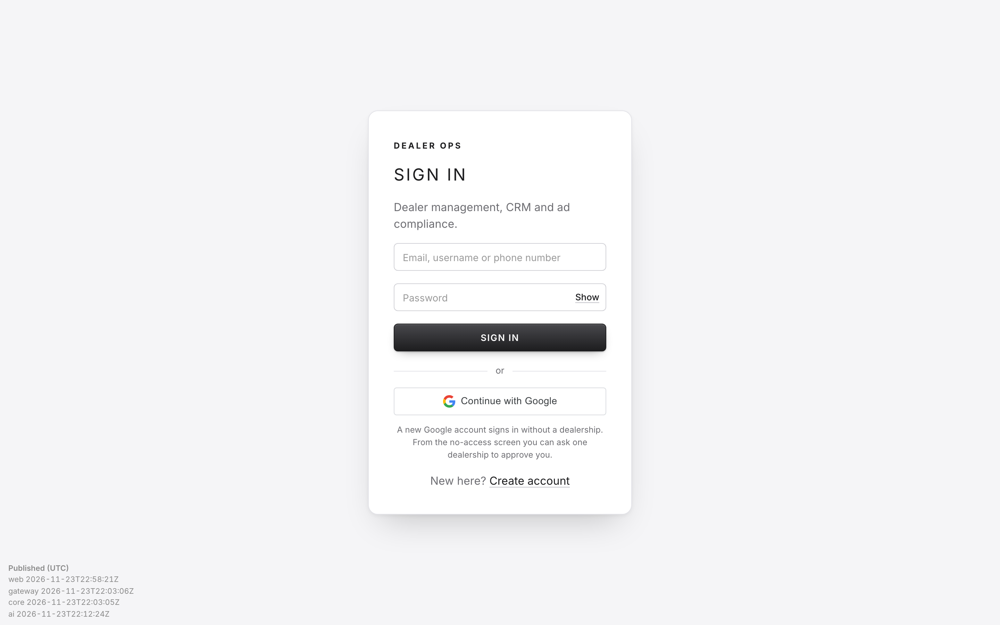
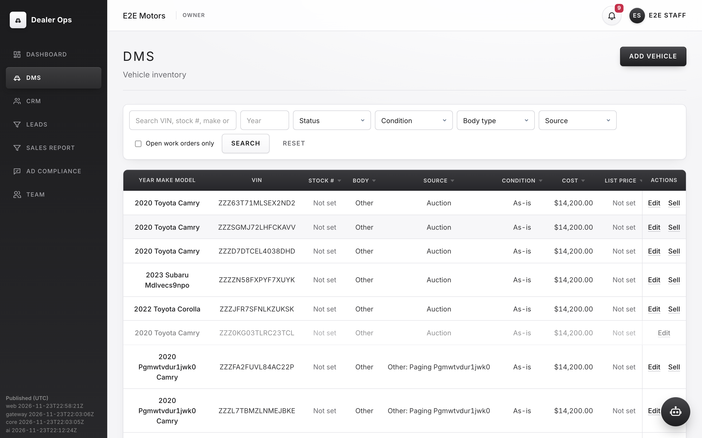
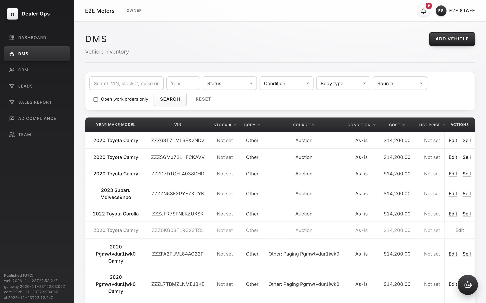
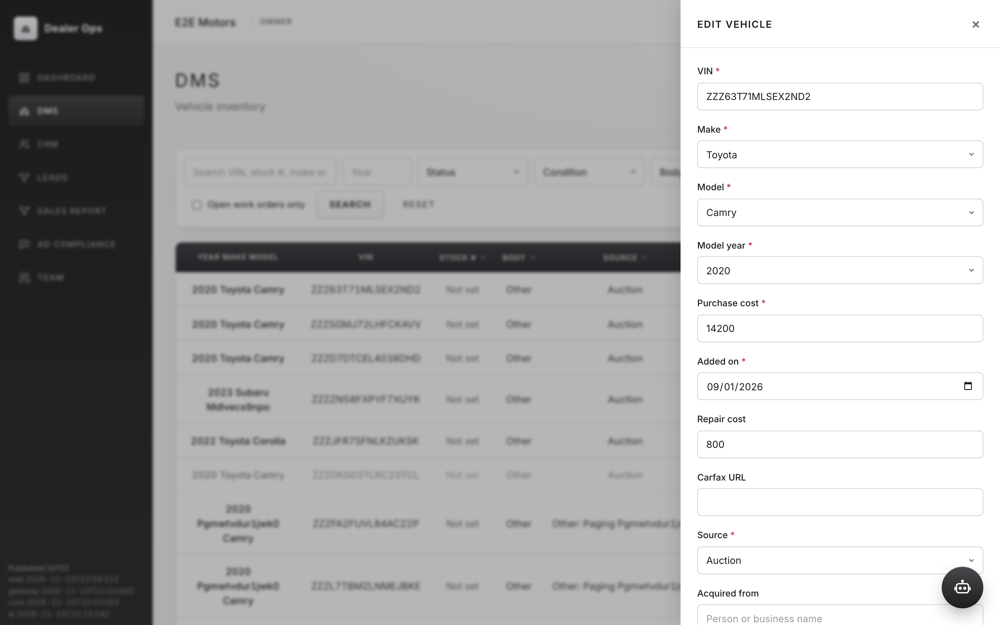
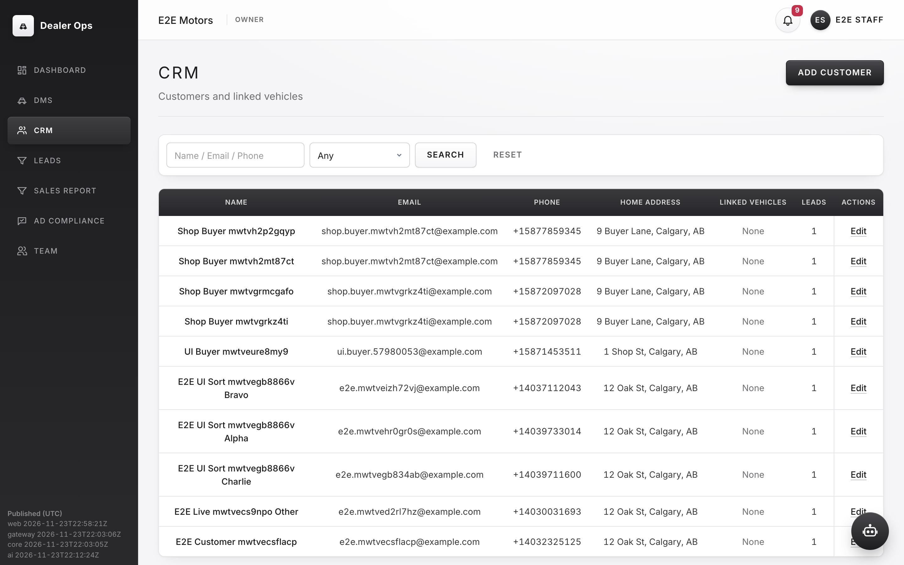
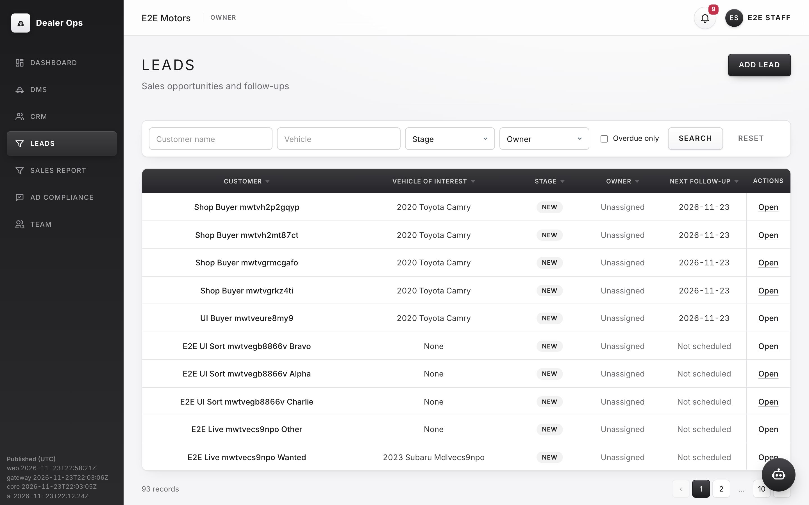
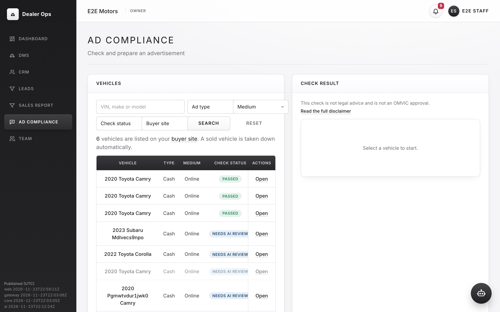
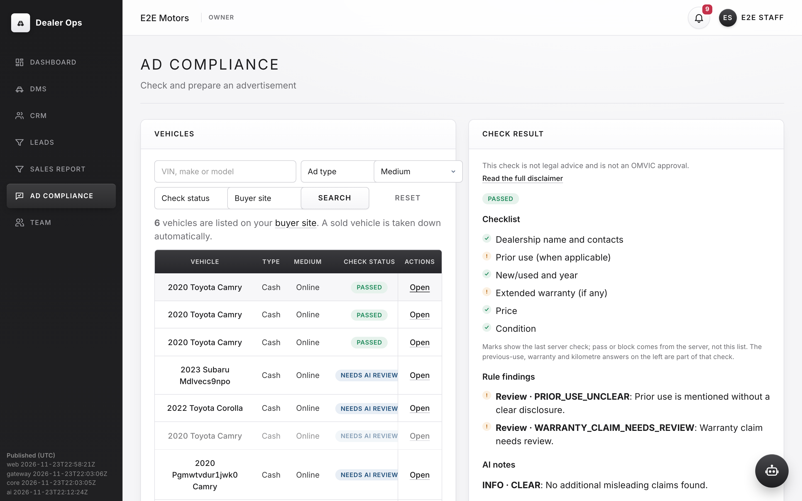
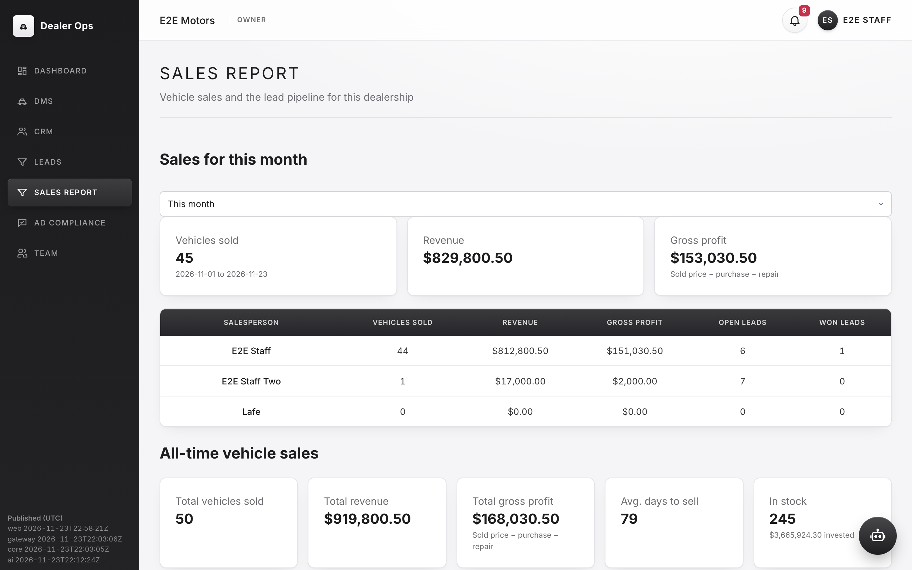
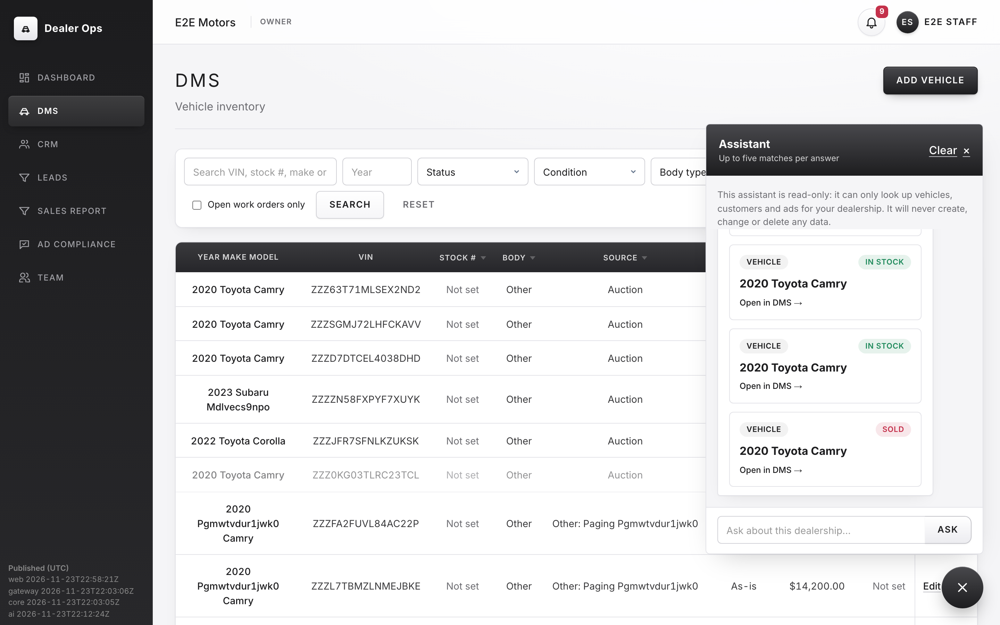
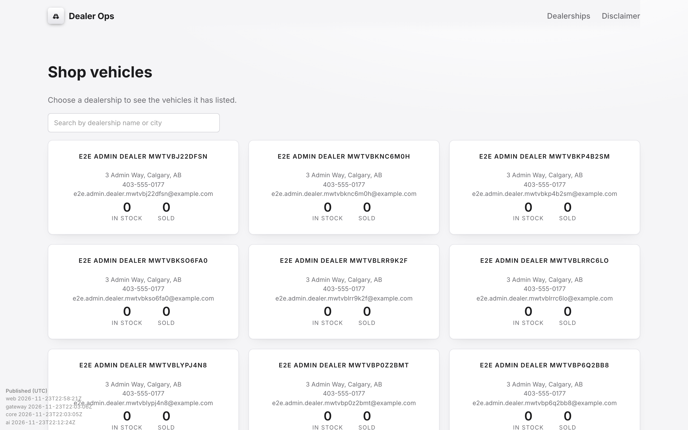
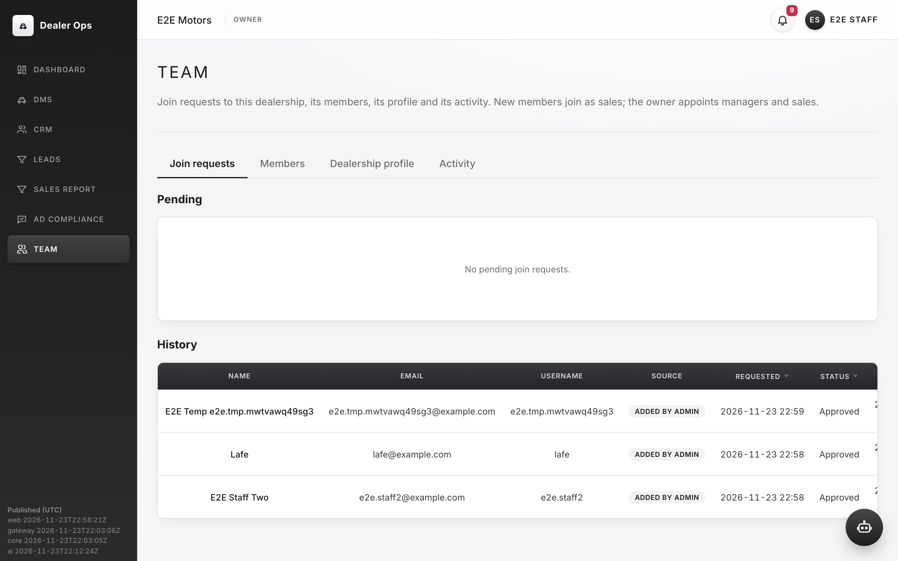
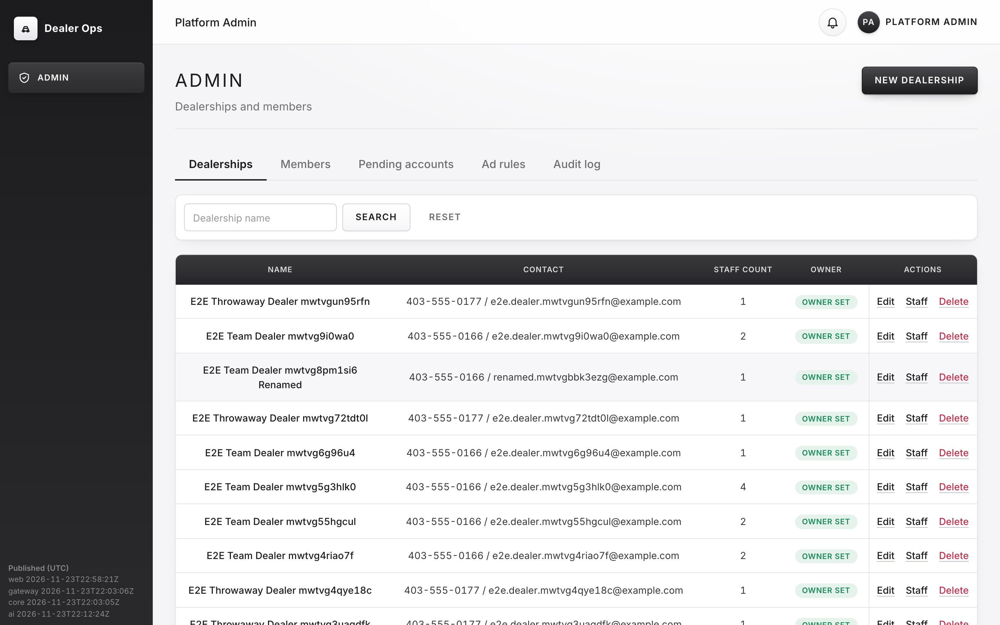
End of report.